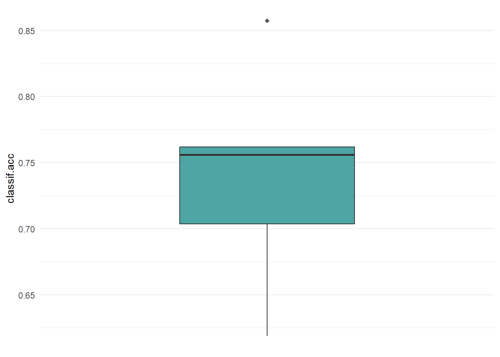
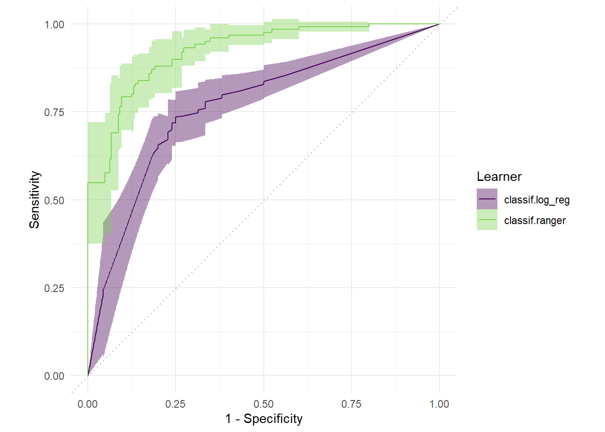

install.packages("data.table")Installing data.table [1.14.8] ...
OK [linked cache]library(data.table)
library(mlr3)
library(mlr3verse)
library(mlr3viz)install.packages("data.table")Installing data.table [1.14.8] ...
OK [linked cache]library(data.table)
library(mlr3)
library(mlr3verse)
library(mlr3viz)특정한 데이터로 훈련된 머신러닝 모델은 새로운 데이터에도 일반화시킬 수 있어야 합니다. 다시 말해 학습 데이터로 훈련된 모델이 좋은 성능을 낸다면, 다른 데이터를 통해서도 좋은 성능이 나와야 한다는 것입니다.
모델의 성능의 일반화를 평가하기 위해선 우선 모델의 성능을 평가할 지표를 선택해야 합니다. 목적에 따라 정확도가 될 수도 있고, auc 가 될 수도 있겠죠.
적절한 평가지표를 선택했다면, 일반화 평가를 위해 사용 가능한 데이터를 어떻게 사용할지를 정해주어야 합니다. 이 때 모델 학습에 사용된 데이터는 사용되어서는 안됩니다. 동일한 데이터로 검증해봤자 동일한 성능이 나올테니까요. 훈련데이터서는 좋은 성능을 보여주었지만, 새로운 데이터에서는 예측 성능이 나빠질 수도 있구요 (과적합, Overfitting).
따라서, 학습에 사용된 training 데이터를 사용하지 않고 모델의 성능을 테스트하는 것이 일반적입니다. 그러나 학습에 사용된 데이터와 동일한 피처, 동일한 형태를 갖고 있는 새로운 데이터가 없는 것이 일반적입니다. 이 문제를 해결하기 위해, 기존에 학습했던 데이터의 일부분만을 사용하여 평가에 사용하게 되었습니다. 그래서 전체 데이터에서 training 데이터, test 데이터를 나눈 뒤, train 데이터로만 학습을 하고, test 데이터는 새로운 데이터인 것처럼 간주하고 학습된 모델의 성능을 평가하는 것입니다.
가장 흔한 전략은 홀드아웃(holdout) 전략입니다. 데이터에서 특정 비율로 랜덤하게 데이터를 나누어 training 데이터와 test 데이터로 나누는 것이죠.
이상적으로는 training 데이터가 굉장히 커서, 학습 시 데이터의 특성을 대표할 수 있는 것입니다. test 데이터더 신뢰할 수 있는 일반화를 할 수 있도록 큰 데이터가 필요할테구요. 그렇지만 문제는 역시 사용할 수 있는 데이터가 제한됐다는 것입니다.
이 문제를 해결할 수 있는 전략이 바로 Resampling 전략입니다. Resampling 전략은 가능한 모든 데이터를 여러 개의 training과 test 데이터로 반복적으로 나누어 학습을 하고, 모델의 성능의 평균을 계산하는 전략입니다. 반복하는 횟수가 많으면 많을수록 모델의 성능에 대한 분산이 감소할테고, 그러면 더욱 신뢰할 수 있는 성능을 확인할 수 있을 것입니다.
mlr3 에서 실행가능한 모든 리샘플링 전략은 mlr_resamplings 딕셔너리를 통해 확인가능합니다. 홀드아웃, 교차 검증(CV), 부트스트랩 등이 포함되어있습니다.
as.data.table(mlr_resamplings)| key | label | params | iters |
|---|---|---|---|
| bootstrap | Bootstrap | ratio , repeats | 30 |
| custom | Custom Splits | NA | |
| custom_cv | Custom Split Cross-Validation | NA | |
| cv | Cross-Validation | folds | 10 |
| holdout | Holdout | ratio | 1 |
| insample | Insample Resampling | 1 | |
| loo | Leave-One-Out | NA | |
| repeated_cv | Repeated Cross-Validation | folds , repeats | 100 |
| subsampling | Subsampling | ratio , repeats | 30 |
params 열을 보면 resampling을 위한 파라미터들이 나와있습니다. 예를 들어 holdout은 ratio를 통해 어떤 비율로 train, test를 나눌 것인지, cv는 folds를 통해 몇 개로 데이터를 나눌 것인지를 설정해줄 수 있죠.
리샘플링 객체를 만들어봅시다. 우선 holdout을 이용해 리샘플링을 진행하겠습니다. 리샘플링 객체는 rsmp()를 통해 만들 수 있습니다.
resampling <- rsmp("holdout")
resampling<ResamplingHoldout>: Holdout
* Iterations: 1
* Instantiated: FALSE
* Parameters: ratio=0.6667생성한 리샘플링 객체를 확인했을 때, Instantiated: FALSE라고 되어있습니다. 아직 리샘플링을 수행하지 않았기 때문입니다.
또한 holdout 의 ratio를 정해주지 않았기 문에 2/3가 초기값으로 설정되어있습니다. 즉 데이터의 3분의 2는 훈련에, 3분의 1은 검증에 쓰이게 됩니다. 새로운 리샘플링 객체를 만들 때 holdout 비율을 설정하거나 기존의 객체의 파라미터 값을 수정할 수 있습니다.
resampling <- rsmp("holdout", ratio=0.8)
resampling$param_set$values <- list(ratio=0.5)holdout은 성능을 일반화하는 과정을 한 번밖에 수행하지 않습니다. 따라서 좀더 신뢰성 있는 성능 측정을 위해, 가장 많이 사용되는 리샘플링 방법 중 하나인 교차 검증(cv)를 사용하도록 하겠습니다.
resampling <- rsmp("cv", folds=10)데이터가 들어가 있는 태스크에 대해 리샘플링을 수행하기 위해 리샘플링 객체의 $instantiate() 메소드를 이용해야합니다. 메소드 안에 태스크를 넣어주면 리샘플링이 적용됐다는 의미에서 Instantiated: TRUE가 출력됩니다.
task <- tsk("sonar")
resampling$instantiate(task)
resampling<ResamplingCV>: Cross-Validation
* Iterations: 10
* Instantiated: TRUE
* Parameters: folds=10리샘플리의 실행은 resample() 을 사용합니다.
learner <- lrn("classif.rpart", predict_type="prob")
rr <- resample(task, learner, resampling)INFO [18:04:35.776] [mlr3] Applying learner 'classif.rpart' on task 'sonar' (iter 1/10)
INFO [18:04:35.854] [mlr3] Applying learner 'classif.rpart' on task 'sonar' (iter 2/10)
INFO [18:04:35.890] [mlr3] Applying learner 'classif.rpart' on task 'sonar' (iter 3/10)
INFO [18:04:35.920] [mlr3] Applying learner 'classif.rpart' on task 'sonar' (iter 4/10)
INFO [18:04:35.954] [mlr3] Applying learner 'classif.rpart' on task 'sonar' (iter 5/10)
INFO [18:04:35.986] [mlr3] Applying learner 'classif.rpart' on task 'sonar' (iter 6/10)
INFO [18:04:36.019] [mlr3] Applying learner 'classif.rpart' on task 'sonar' (iter 7/10)
INFO [18:04:36.050] [mlr3] Applying learner 'classif.rpart' on task 'sonar' (iter 8/10)
INFO [18:04:36.081] [mlr3] Applying learner 'classif.rpart' on task 'sonar' (iter 9/10)
INFO [18:04:36.131] [mlr3] Applying learner 'classif.rpart' on task 'sonar' (iter 10/10)rr<ResampleResult> of 10 iterations
* Task: sonar
* Learner: classif.rpart
* Warnings: 0 in 0 iterations
* Errors: 0 in 0 iterations리샘플링 실행이 완료되었고, rr이라는 객체 안에 리샘플링 결과가 저장되어있습니다. 리샘플링을 통한 모델의 성능 평가는 $score()와 $aggregate() 메소드를 이용합니다.
$score()와 $aggregate() 모두 Measure 객체를 이용해 성능을 측정합니다. 기본적으로 성능을 측정할 때는 검증을 위한 데이터셋을 활용하게 됩니다.
우선 정확도(classif.acc)를 통해 모델의 정확도를 평가해보겠습니다.
acc <- rr$score(msr("classif.acc"))
acc[,.(iteration, classif.acc)]| iteration | classif.acc |
|---|---|
| 1 | 0.7619048 |
| 2 | 0.6666667 |
| 3 | 0.6190476 |
| 4 | 0.7142857 |
| 5 | 0.7619048 |
| 6 | 0.7619048 |
| 7 | 0.8571429 |
| 8 | 0.7619048 |
| 9 | 0.7500000 |
| 10 | 0.7000000 |
$score()를 통해 모델의 성능을 살펴보니 cv에서 설정한 10번의 반복 별로 성능이 출력되는 것을 알 수 있습니다.
다음으로 $aggregate()를 이용해 모델의 성능을 살펴보겠습니다. $aggregate()는 반복 때마다 계산된 성능의 평균 값을 계산하여 출력합니다.
rr$aggregate(msr("classif.acc"))classif.acc
0.7354762 여러 개의 평가 지표로 모델의 성능을 평가할 수도 있습니다.
measures <- msrs(c("classif.acc",
"classif.sensitivity",
"classif.specificity",
"classif.auc"))
rr$aggregate(measures) classif.acc classif.sensitivity classif.specificity classif.auc
0.7354762 0.7388967 0.7439880 0.7691579 mlr3viz의 autoplot()을 통해 리샘플링 결과를 시각화할 수 있습니다.
require(mlr3viz)
autoplot(rr, measure = msr("classif.acc"), type="boxplot")
autoplot(rr, measure = msr("classif.acc"), type="histogram")

벤치마킹은 다른 러너 또는 여러 태스크들을 각기 다른 리샘플링 방법을 이용해 학습시킬 수 있는 방법입니다. 지금까지는 하나의 태스크에 하나의 러너, 하나의 리샘플링을 해주었다면, 벤치마킹을 이용해서는 여러 가지의 학습을 한번에 수행할 수 있는 것이지요.
이 벤치마킹은 여러 가지 러너와 리샘플링을 비교함으로써 성능별로 좋은 러너를 나열하여 쉽게 비교할 수 있다는 장점이 있습니다.
library(mlr3)
library(mlr3learners)
design <- benchmark_grid(
tasks = tsk('sonar'),
learners = lrns(c('classif.log_reg','classif.ranger'),
predict_type='prob',
predict_sets=c('train','test')),
resamplings = rsmps('cv',folds=5)
)
design| task | learner | resampling |
|---|---|---|
| <environment: 0x0000022a6af044a0> | <environment: 0x0000022a6b17f480> | <environment: 0x0000022a64090610> |
| <environment: 0x0000022a6af044a0> | <environment: 0x0000022a6bea6d28> | <environment: 0x0000022a64090610> |
bmr <- benchmark(design, store_models = T)INFO [18:04:37.540] [mlr3] Running benchmark with 10 resampling iterations
INFO [18:04:37.546] [mlr3] Applying learner 'classif.log_reg' on task 'sonar' (iter 1/5)
INFO [18:04:37.613] [mlr3] Applying learner 'classif.log_reg' on task 'sonar' (iter 2/5)
INFO [18:04:37.679] [mlr3] Applying learner 'classif.log_reg' on task 'sonar' (iter 3/5)
INFO [18:04:37.746] [mlr3] Applying learner 'classif.log_reg' on task 'sonar' (iter 4/5)
INFO [18:04:37.834] [mlr3] Applying learner 'classif.log_reg' on task 'sonar' (iter 5/5)
INFO [18:04:37.900] [mlr3] Applying learner 'classif.ranger' on task 'sonar' (iter 1/5)
INFO [18:04:38.741] [mlr3] Applying learner 'classif.ranger' on task 'sonar' (iter 2/5)
INFO [18:04:38.865] [mlr3] Applying learner 'classif.ranger' on task 'sonar' (iter 3/5)
INFO [18:04:38.993] [mlr3] Applying learner 'classif.ranger' on task 'sonar' (iter 4/5)
INFO [18:04:39.118] [mlr3] Applying learner 'classif.ranger' on task 'sonar' (iter 5/5)
INFO [18:04:39.243] [mlr3] Finished benchmarkmeasures <- list(
msr('classif.acc',id='accuracy'),
msr('classif.auc',id='AUC'),
msr('classif.prauc',id='PRC')
)
bmr$aggregate(measures)| nr | resample_result | task_id | learner_id | resampling_id | iters | accuracy | AUC | PRC |
|---|---|---|---|---|---|---|---|---|
| 1 | <environment: 0x0000022a5f0d3ec0> | sonar | classif.log_reg | cv | 5 | 0.7406504 | 0.7650445 | 0.7683154 |
| 2 | <environment: 0x0000022a5f0f1c68> | sonar | classif.ranger | cv | 5 | 0.8415796 | 0.9235181 | 0.9333841 |
autoplot(bmr, type='roc')